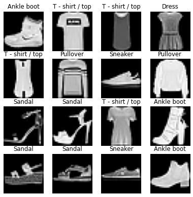
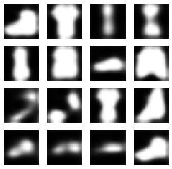
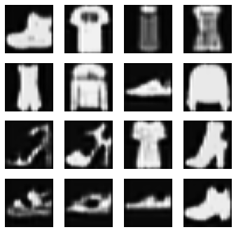
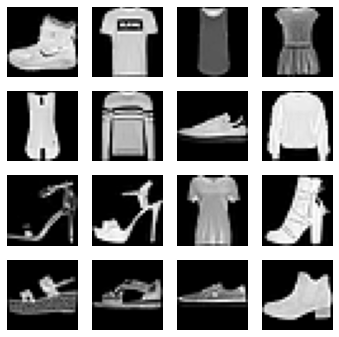

import pickle,gzip,math,os,time,shutil,torch,matplotlib as mpl,numpy as np,matplotlib.pyplot as plt
import fastcore.all as fc
from collections.abc import Mapping
from pathlib import Path
from operator import attrgetter,itemgetter
from functools import partial
from torch import tensor,nn,optim
from torch.utils.data import DataLoader,default_collate
import torch.nn.functional as F
import torchvision.transforms.functional as TF
from datasets import load_dataset,load_dataset_builder
from fastprogress import progress_bar,master_bar
from miniai.datasets import *
from miniai.training import *
from miniai.conv import *This is not my content it’s a part of Fastai’s From Deep Learning Foundations to Stable Diffusion course. I add some notes for me to understand better thats all. For the source check Fastai course page.
I this notebook is for explaning why and how manual coding doesnt work. watch the video and skip to the next one. (notice there is no exports here)
Autoencoders
from fastcore.test import test_close
torch.set_printoptions(precision=2, linewidth=140, sci_mode=False)
torch.manual_seed(1)
mpl.rcParams['image.cmap'] = 'gray'
import logging
logging.disable(logging.WARNING)Data
x,y = 'image','label'
name = "fashion_mnist"
dsd = load_dataset(name, ignore_verifications=True)@inplace
def transformi(b): b[x] = [TF.to_tensor(o) for o in b[x]]bs = 256
tds = dsd.with_transform(transformi)ds = tds['train']
img = ds[0]['image']
show_image(img, figsize=(1,1));cf = collate_dict(ds)def collate_(b): return to_device(cf(b))
def data_loaders(dsd, bs, **kwargs): return {k:DataLoader(v, bs, **kwargs) for k,v in dsd.items()}dls = data_loaders(tds, bs, collate_fn=collate_)dt = dls['train']
dv = dls['test']
xb,yb = next(iter(dt))labels = ds.features[y].nameslabels['T - shirt / top',
'Trouser',
'Pullover',
'Dress',
'Coat',
'Sandal',
'Shirt',
'Sneaker',
'Bag',
'Ankle boot']lbl_getter = itemgetter(*yb[:16])
titles = lbl_getter(labels)mpl.rcParams['figure.dpi'] = 70
show_images(xb[:16], imsize=1.7, titles=titles)
Warmup - classify
from torch import optim
bs = 256
lr = 0.4cnn = nn.Sequential(
conv(1 ,4), #14x14
conv(4 ,8), #7x7
conv(8 ,16), #4x4
conv(16,16), #2x2
conv(16,10, act=False),
nn.Flatten()).to(def_device)opt = optim.SGD(cnn.parameters(), lr=lr)
loss,acc = fit(5, cnn, F.cross_entropy, opt, dt, dv)0 0.37266189764738084 0.8627
1 0.36386815688610075 0.866
2 0.3640298747062683 0.8672
3 0.36340640761852266 0.8692
4 0.36365662859678266 0.8698dsd['train'][0]{'image': <PIL.PngImagePlugin.PngImageFile image mode=L size=28x28>,
'label': 9}Autoencoder
def deconv(ni, nf, ks=3, act=True):
layers = [nn.UpsamplingNearest2d(scale_factor=2),
nn.Conv2d(ni, nf, stride=1, kernel_size=ks, padding=ks//2)]
if act: layers.append(nn.ReLU())
return nn.Sequential(*layers)def eval(model, loss_func, valid_dl, epoch=0):
model.eval()
with torch.no_grad():
tot_loss,count = 0.,0
for xb,_ in valid_dl:
pred = model(xb)
n = len(xb)
count += n
tot_loss += loss_func(pred,xb).item()*n
print(epoch, f'{tot_loss/count:.3f}')def fit(epochs, model, loss_func, opt, train_dl, valid_dl):
for epoch in range(epochs):
model.train()
for xb,_ in train_dl:
loss = loss_func(model(xb), xb)
loss.backward()
opt.step()
opt.zero_grad()
eval(model, loss_func, valid_dl, epoch)ae = nn.Sequential( #28x28
nn.ZeroPad2d(2), #32x32
conv(1,2), #16x16
conv(2,4), #8x8
# conv(4,8), #4x4
# deconv(8,4), #8x8
deconv(4,2), #16x16
deconv(2,1, act=False), #32x32
nn.ZeroPad2d(-2), #28x28
nn.Sigmoid()
).to(def_device)eval(ae, F.mse_loss, dv)0 0.158opt = optim.SGD(ae.parameters(), lr=0.01)
fit(5, ae, F.mse_loss, opt, dt, dv)0 0.136
1 0.127
2 0.125
3 0.124
4 0.124opt = optim.SGD(ae.parameters(), lr=0.1)
fit(5, ae, F.mse_loss, opt, dt, dv)0 0.108
1 0.047
2 0.039
3 0.036
4 0.034p = ae(xb)
show_images(p[:16].data.cpu(), imsize=1.5)
p = ae(xb)
show_images(p[:16].data.cpu(), imsize=1.5)
show_images(xb[:16].data.cpu(), imsize=1.5)